- Last Update : 16/07/2024
Introduction
Thank you for your interest in EmeHRIS Solution. Welcome to the future of Human Resource Management with EmeHRIS, the ultimate Core HRIS B2B SaaS solution designed to streamline and optimize your HR processes.
Key Components and Functionalities of EmeHRIS
Centralized Data Management
- EmeHRIS centralizes all employee data in a single, secure database.
- This ensures that information is accurate, consistent, and easily accessible, allowing HR professionals to make informed decisions.
- Key Features:
- Data Security: Robust security measures protect sensitive employee information.
- Compliance: Ensures compliance with data protection regulations like GDPR and CCPA.
Employee Data Management
- Maintain comprehensive employee records, including personal details, employment history, and performance data.
- Ensure data accuracy and accessibility for efficient HR management.
- Key Features:
- Comprehensive Profiles: Detailed records of employees' personal and professional information.
- Document Management: Store and manage important documents securely.
Professional Data Management
- Track and manage professional information such as skills, certifications, and career development plans.
- Support continuous employee development and training.
- Key Features:
- Skills Tracking: Monitor employees' skills and competencies.
- Career Development: Manage career growth and development plans.
Organizational Data Management
- Maintain organizational structure and hierarchy information.
- Support organizational planning and management.
- Key Features:
- Hierarchy Management: Define and manage organizational hierarchy.
- Departmental Data: Manage departmental and team information.
Performance Management
- Facilitate continuous employee evaluation and development through robust performance management tools.
- Set goals, track progress, conduct performance reviews, and provide feedback systematically.
- Key Features:
- Goal Setting: Align individual performance with organizational objectives.
- Performance Reviews: Regular reviews and feedback for employee development.
Time and Attendance Management
- Manage employee attendance, leave balances, and working hours with precision.
- Automated clock-in processes provide real-time visibility into attendance patterns.
- Key Features:
- Automated Tracking: Real-time monitoring of attendance and absences.
- Resource Allocation: Enhances accuracy and proactive resource management.
Task and Request Management
- Streamline task assignment and request management within the organization.
- Improve workflow efficiency and task tracking.
- Key Features:
- Task Assignment: Assign and track tasks efficiently.
- Request Handling: Manage employee requests and approvals.
Team Management
- Facilitate team collaboration and communication.
- Enhance team performance and cohesion.
- Key Features:
- Collaboration Tools: Tools to enhance team communication and collaboration.
- Performance Tracking: Monitor and improve team performance.
HR Process Management
- Automate and streamline various HR processes.
- Ensure efficiency and consistency in HR operations.
- Key Features:
- Process Automation: Automate repetitive HR tasks.
- Workflow Management: Manage HR workflows and approvals.
Key Functionalities of EmeHRIS
Integration with Other Systems
- Seamlessly integrate with various third-party systems, including payroll providers, benefits administration platforms, and talent management software.
- Real-time data synchronization and automated processes ensure smooth operations and data exchanges across your HR ecosystem.
- Key Features:
- Real-time Synchronization: Ensure data consistency across systems.
- Automated Processes: Reduce manual intervention and errors.
User-Friendly Interface
- Designed with usability in mind, EmeHRIS offers an intuitive interface that simplifies navigation and enhances user experience.
- The collaborative design effort ensures the application meets usability standards and operational needs.
- Key Features:
- Intuitive Design: Easy-to-navigate interface.
- Customizable Dashboards: Personalized user experience.
Agile Development and Deployment
- EmeHRIS employs an agile development approach, allowing for iterative progress and continuous feedback.
- This methodology ensures the solution evolves to meet emerging HR needs while maintaining high-quality standards.
- Key Features:
- Iterative Development: Continuous improvement based on feedback.
- Rigorous Testing: Ensures high-quality standards are maintained.
Why Choose EmeHRIS?
EmeHRIS stands out in the crowded HRIS market for its comprehensive functionality, user-friendly interface, and scalability. Our solution is designed to grow with your business, providing the tools you need to manage your workforce effectively today and tomorrow.
- Experience the EmeHRIS difference:
- Efficiency: Streamline HR processes and reduce administrative burden.
- Accuracy: Ensure data accuracy and compliance with automated processes.
- Insight: Make informed decisions with powerful analytics and reporting tools.
- Scalability: Adapt to your organization’s changing needs with a scalable solution.
Here below is a video showcasing EmeHRIS's three main actors (HR, Manager, Employee) interfaces and functionalities.
Node Js Web App
Prerequisite
Environment Setup
You have to download and setup node js from nodejs.org. You can follow documentation with your own device.
Installing Node js
tip
Recommended link is here -
Great!! As now you have installed the NodeJs successfully, now you just have to install NPM or Yarn. Below we have given the easy documentation.
Installing npm
tip
You can check the official documentation -
https://docs.npmjs.com/downloading-and-installing-node-js-and-npm
sudo apt install -g npmAnd,
Installing Yarn
tip
You can check the official documentation -
https://classic.yarnpkg.com/lang/en/docs/install/#debian-stable
npm install --global yarnPackage Installation
To install node_module , run the following command
npm install Mandatory
Make sure you have node_modules installed in your directory.
The above command will install all the node modules in your directory.
Frontend
-
Main Page:
The main page of our ERP solution is divided into several sections, each represented by a card: the "Profile" card displays the person's name, position, and photo, with "Annafali" as an example who holds the position of "Product Manager." The "My Tasks" card presents a list of upcoming tasks sorted by due date, each task displaying its name, date, status, and available actions (add, edit, delete). The "My Services" card offers a list of buttons, each representing a specific service of the application, identified by a clear name and icon, allowing quick and intuitive access to the desired functionalities. The "Weather" card shows the city's name, current weather information, and temperature. The "My Requests" card displays a list of the user's recent requests, sorted by submission date, with each request showing the type, approver, submission date, status, and a "View" button for details. The "Calendar" card provides an interactive calendar, while the "My News" card displays a list of recent news to keep the user informed and aware of important dates.
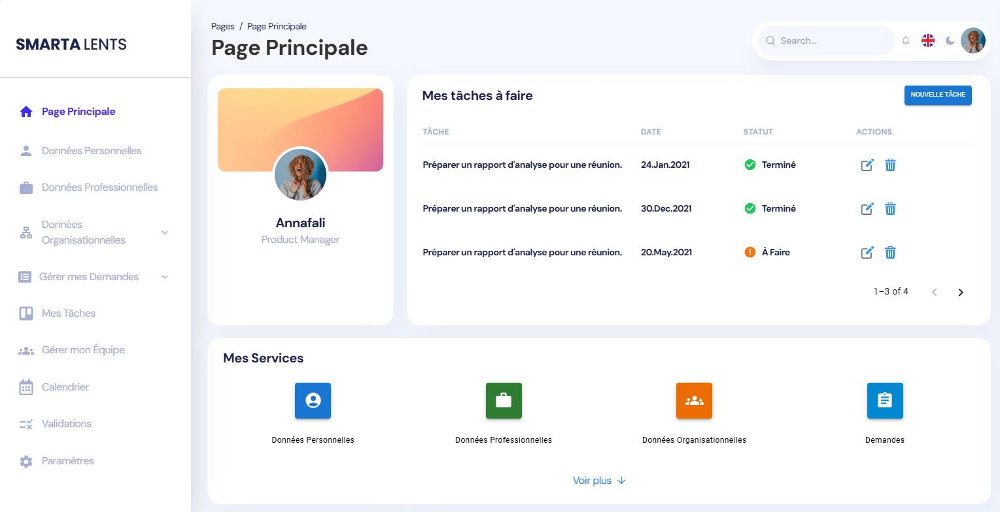
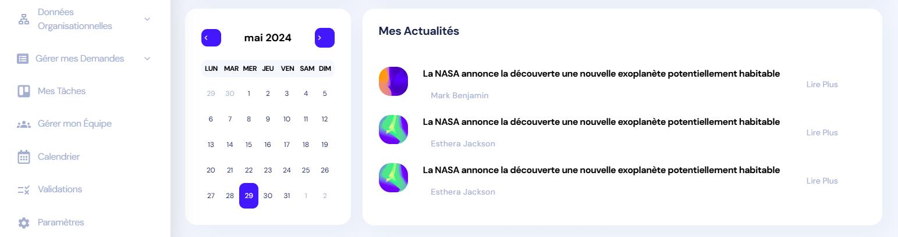
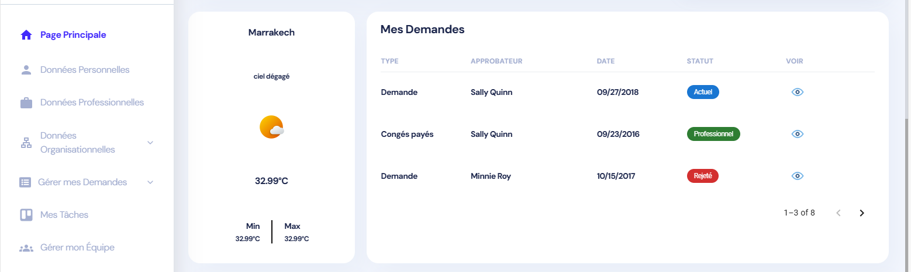
-
Personal Data:
The page is divided into several sections (cards), each presenting different personal information to the user. The "Personal Data" card displays the first name, last name, middle name, gender, marital status, date of birth, place of birth, country of birth, up to three nationalities, and social security number. These data can be modified by clicking the edit button at the top right of the card. The "Address Data" card includes fields for the address type (home, work, other), address line 1, address line 2, postal code, city, region, and country. The "Contact Data" card allows the entry of phone type, country code, phone number, email type (primary, secondary, other), and email address. Finally, the "Bank Account" card contains fields for the bank account number, country code, bank account type (main account, travel expenses, other), bank name, branch, IBAN, and BIC.
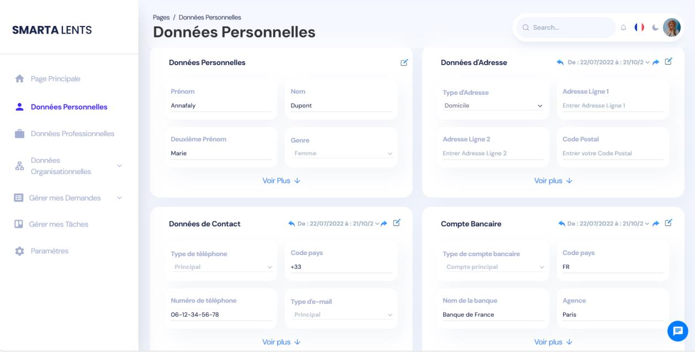
-
Professional Data:
The page is divided into several sections (cards), each presenting different professional information to the user. The "Employee Data" card displays fields like Employee Status (e.g., Active, Inactive), Employee Type (e.g., Permanent, Temporary), Employee Subtype (e.g., Permanent, Temporary, Intern), Employment Type (e.g., Full-time, Part-time, Temporary), and a "View More" link for additional details. The "Contract Data" card includes fields such as Start Date (employee's contract start date), End Date (contract end date or projected end date), Contract Type (e.g., Permanent, Temporary, Freelance), Contract Nature (e.g., Fixed-term, Indefinite), Notice Period (days), Probation Period (days), and a "View More" link for more contract details. The "Temporal Data" card covers Weekly Hours, Monthly Hours, Annual Working Days, Working Schedule Profile (including regular workdays and hours), and a "View More" link for additional temporal data. The "Payroll Data" card features fields like Pay Zone (employee's payroll region or geographical area), Pay Group (pay category or group), Compensation Grade (employee's level or grade of compensation), Base Salary (employee's basic salary amount), and a "View More" link for more payroll information. The "Employment Data" card provides fields such as Position (employee's role within the company) and Manager (employee's direct manager or supervisor). Each card includes arrows and a time range selector to view historical data.
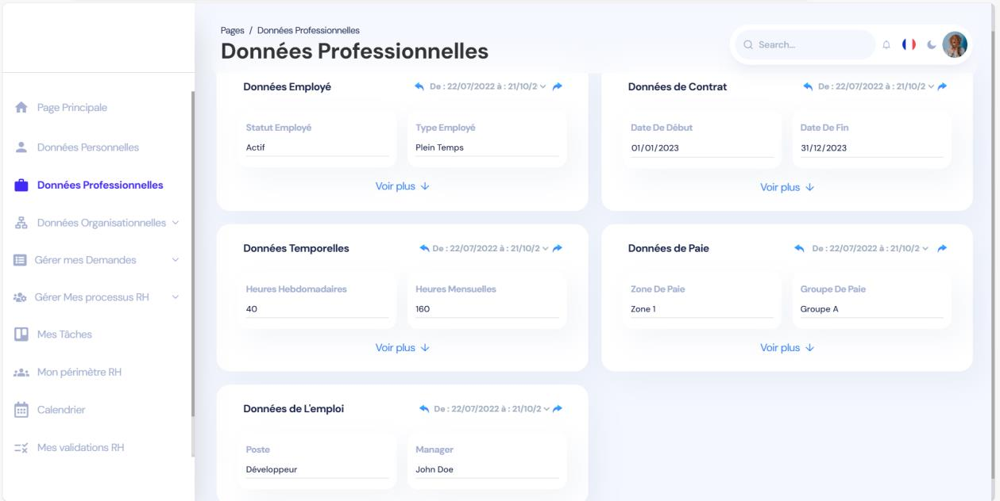
-
Organizational Data:
The organizational data page includes two sub-pages: the Service Chart and the Position Chart. Clicking "Organizational Data" defaults to displaying the Position Chart, while selecting "Service Chart" from the sidebar menu directs users to the Service Chart page. The Position Chart outlines the company's hierarchical structure, detailing employees' names, titles, and visual identification photos. Conversely, the Service Chart illustrates hierarchical relationships among various departments and sub-departments, with each card specifying the respective service or sub-service name.
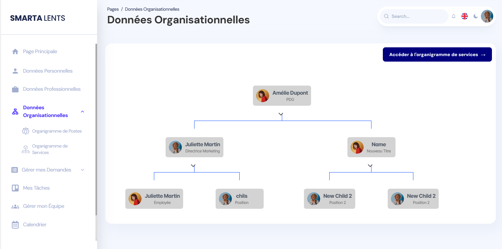
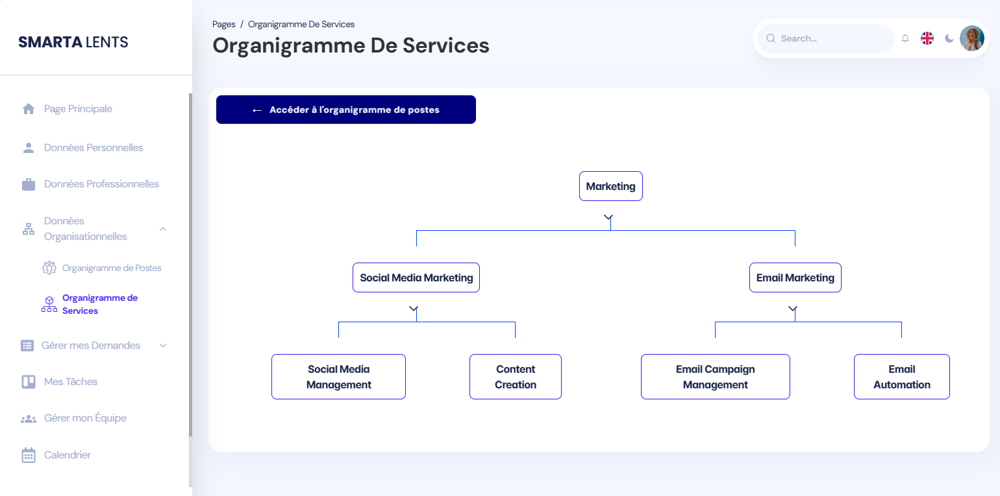
-
Task Management:
This section is divided into several parts, each containing a list of tasks organized by status, with columns for tasks to do, in progress, and completed. Users can add new tasks by clicking the "+" button located at the top of each column.
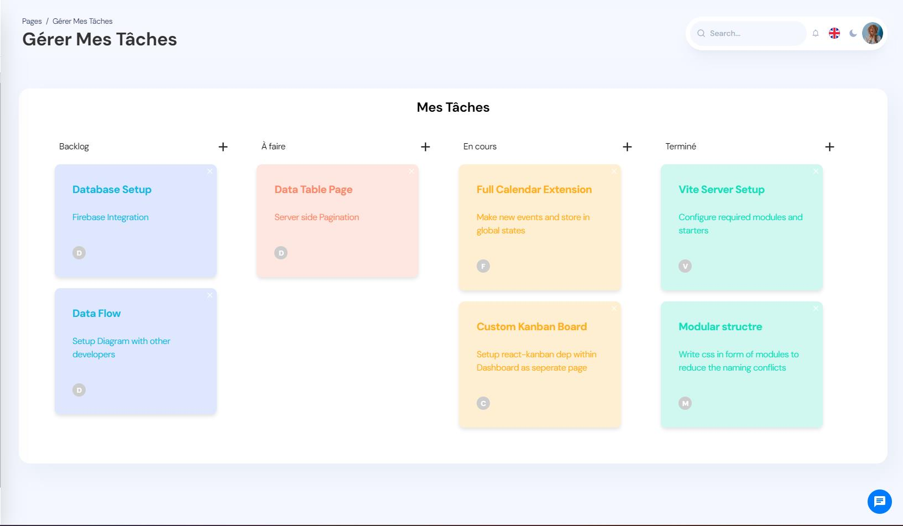
-
Request Management:
The "Manage My Requests" page consists of four distinct sub-pages: the main page displaying all submitted requests, and three specific pages for travel requests, certificate requests, and leave requests.
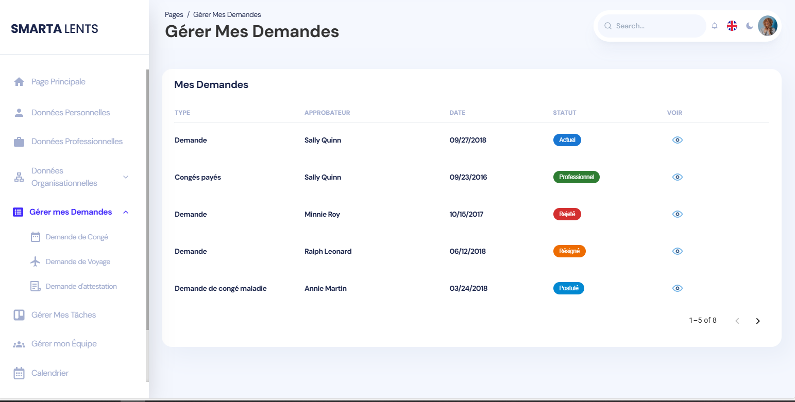
-
Team Management:
The "Manage My Team" page is specifically designed for managers, providing comprehensive profiles of their team members. Each profile includes the individual's full name, job title (where applicable), a visual identification photo, a brief summary outlining their responsibilities, and a direct link to access their complete profile. Additionally, the page features a search bar to facilitate quick navigation and location of specific team members.
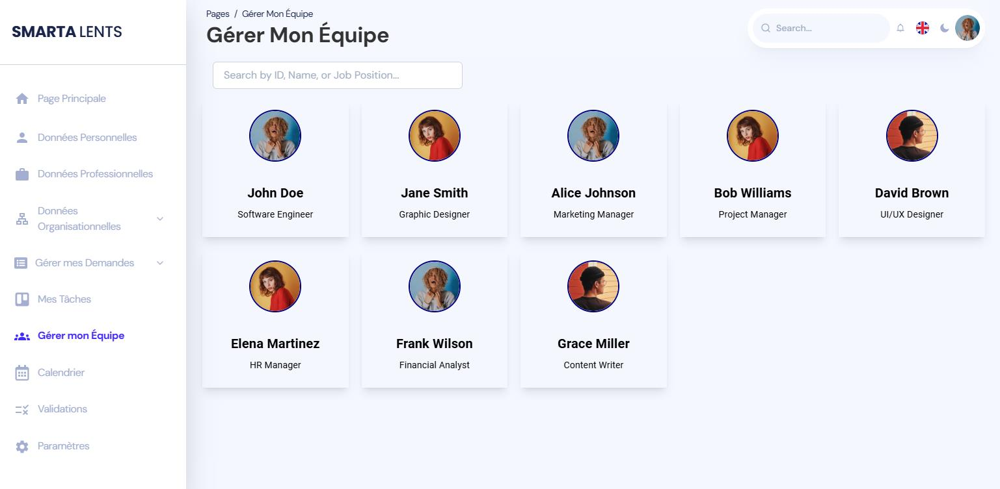
-
Request Validation:
The request validation page features a table presenting the list of requests that the manager needs to approve or reject.
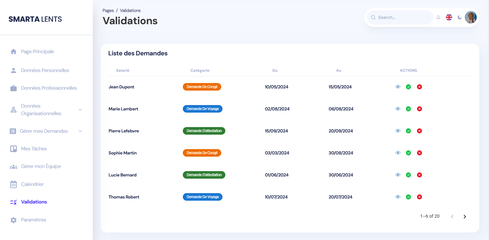
-
Team Calendar:
The table presented is a team calendar used to track the presence, absence, and duty days of team members over a given week.
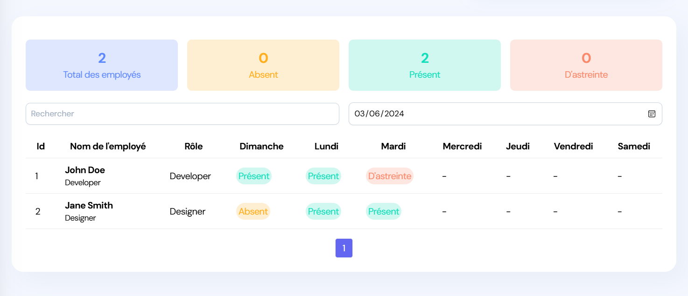
-
New Hire:
The "New Hire" page is dedicated to Human Resources (HR) and aims to collect various important information for the hiring process. The page is divided into three distinct categories to facilitate data entry: Hiring Data, Professional Data, and Personal Data.
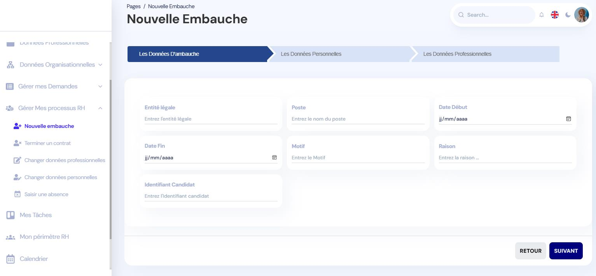
-
Account Settings:
This page displays options to change the profile picture and password. Users can upload a new profile photo and reset their password by entering the current password and confirming the new one.
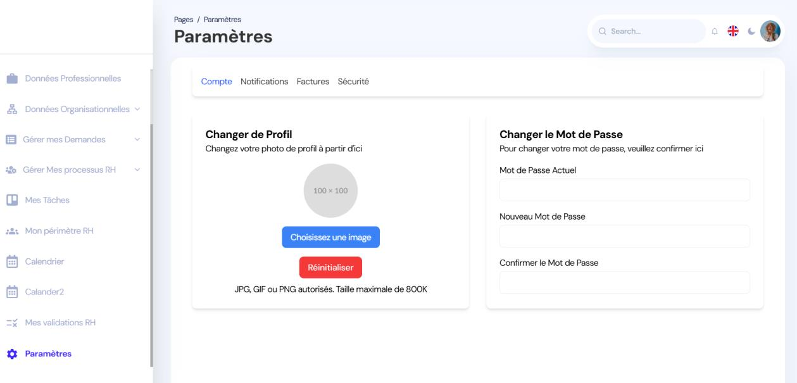
Backend
Installation
Development Environment Setup:
- Java 17: Instructions for installing Java 17.
- IntelliJ IDEA: Instructions for installing IntelliJ IDEA.
- MySQL: Instructions for installing and configuring MySQL.
- Postman: Instructions for installing Postman.
- Maven: Project management tool
Project Dependencies
- Spring Boot Starter Data JPA
- Spring Boot Starter Web
- Spring Boot DevTools
- MySQL Connector/J
- Lombok
Project Architecture
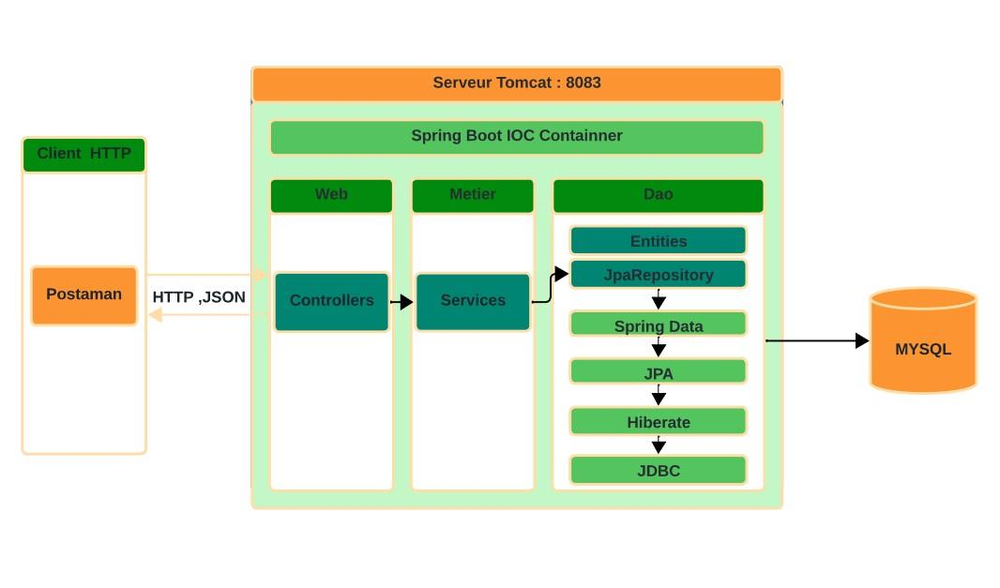Package Description:
- Controllers: Handle HTTP requests.
- Services: Contain business logic.
- Repositories: Interact with the database.
- Entities: Represent database tables.
- DTO (Data Transfer Objects): Contain data transfer objects.
Design
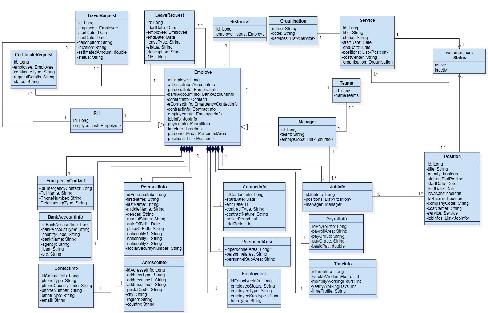API Documentation
Request for creating an employee:
URI: api/employees
Request: Method - POST
Response: Status Code – 201 Created
{
"id": 3,
"addressInfo": {
"idAddressInfo": 7,
"addressInfoHistories": null,
"addressType": "Work",
"addressLine1": "456 Elm Street",
"addressLine2": "",
"postalCode": "54321",
"city": "Cityville",
"region": "Region1",
"country": "Country2"
},
// ... (rest of the JSON response)
}
Request for deleting an employee:
URI: api/employees/2
Request: Method - DELETE
Response: Status Code – 200 OK
Employee deleted successfully with id = 2
Request for updating an employee's address:
URI: api/employees/address/5
Request: Method - PUT
Response: Status Code – 200 OK
{
"idAddressInfo": 5,
"addressType": "Work",
"addressLine1": "456 Elm",
"addressLine2": "444 Elm st",
"postalCode": "54321",
"city": "Paris",
"region": "Region1",
"country": "Country2"
}
Request for displaying an employee's address:
URI: api/employees/address/5
Request: Method - GET
Response: Status Code – 200 OK
{
"idAddressInfo": 5,
"addressType": "Work",
"addressLine1": "456 Elm",
"addressLine2": "444 Elm st",
"postalCode": "54321",
"city": "Paris",
"region": "Region1",
"country": "Country2"
}